Oscilador Armónico Simple
Alguien, de los famosos de Física, dijo una vez: quien entienda el oscilador armónico simple en todas sus facetas, entiende la mitad de toda la Física. Por ello vamos a tratar de estudiarlo. Llamaremos Oscilador armónico simple o pendulo físico linealizado aquel sistema físico que tiene oscilaciones pequeñas y por lo tanto se puede linealizar la ecuación diferencial
| > | restart; |
Oscilador Armónico Simple Libre y no amorgiguado)
El oscilador armónico simple, libre tiene como ecuación diferecial
| > | ecuacosarmsimple:=diff(xsimp(t),t$2)=-(omega0^2)*xsimp(t); |
| 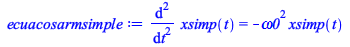 | (1.1.1) |
que tendrá como solución
| > | solxsimpt:=dsolve({ecuacosarmsimple,xsimp(0)=x0,D(xsimp)(0)=v0},xsimp(t));
assign(solxsimpt);vsimp(t):=diff(xsimp(t),t); |
| (1.1.2) |
Supongamos que 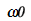= 2 y que el movil parte de x0 = 0 con distintas velocidades iniciales. Vale decir
v(0) = 3, 5, 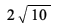, 7, 8.
| > | omega0:='omega0';x0:='x0'; v0:='v0';
Xsimp:=unapply(xsimp(t),omega0,x0,v0,t); Vsimp:=unapply(vsimp(t),omega0,x0,v0,t); |
| 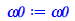 | |
| 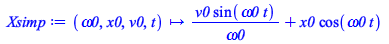 | |
| (1.1.3) |
con lo cual obtendremos la siguiente gráfica posición tiempo
| > | plot([Xsimp(2,0,3,t),Xsimp(2,0,5,t),Xsimp(2,0,2*sqrt(10),t),Xsimp(2,0,7,t),Xsimp(2,0,8,t)],t=0..4*Pi,labels=[t,"xsimp"], title="Oscilador Armonico Simple, Evolucion temporal",scaling=constrained); |
| 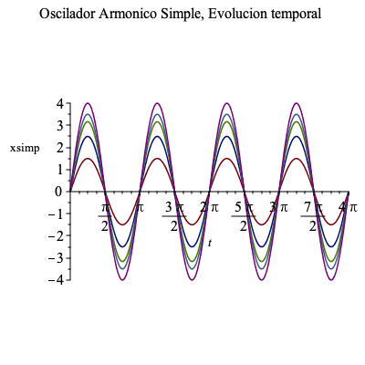 |
y la representación en el espacio de fases será
| > | plot({[Xsimp(2,0,3,t),Vsimp(2,0,3,t),t=0..2*Pi],
[Xsimp(2,0,5,t),Vsimp(2,0,5,t),t=0..2*Pi], [Xsimp(2,0,2*sqrt(10),t),Vsimp(2,0,2*sqrt(10),t),t=0..2*Pi], [Xsimp(2,0,7,t),Vsimp(2,0,7,t),t=0..2*Pi], [Xsimp(2,0,8,t),Vsimp(2,0,8,t),t=0..2*Pi] }, scaling=constrained,labels=[xsimp,vsimp],title="Oscilador Armonico Simple, Diagrama de Fase "); |
| 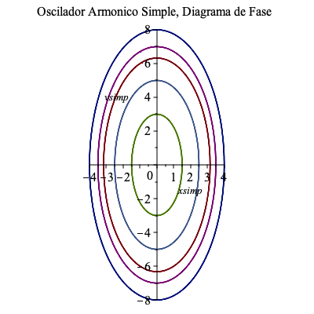 |
En muchos problemas esta primera integral será fácil de obtener, no así la integral de la posición respecto al tiempo. Por ello
son muy útiles las gráficas V(t) vs X(t). Esas gráficas se denominan gráficas del espacio de fases, y cada
una de ellas representa un valor distinto para la energia. En ella los puntos de equilibrio se idenfican gráficamente. En este caso el
punto de equilibrio, como se esperaba, es
Esto se obtiene fácilmente si multiplicamos por V(t) = 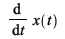 e integrando.
| > | ecuacE:= E=(1/2)*omega^2 + (1/2)*omega0^2*theta^2; |
| 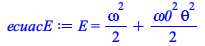 | (1.1.4) |
primer término representa la energía cinética y el segundo la energía potencial gravitatoria. Cada una de las elipses le corresponde un valor de la Energía total
- subamortiguado si
 < 0;
< 0; - sobreamortiguado si
 > 0 y
> 0 y - críticamente amortiguado si
 =0 .
=0 .
Oscilador Armónico Amortiguado
Si consideramos el caso del oscilador armonico amortiguado, tendremos que la ecuación diferencial será
| > | ecuacosarmamort:=diff(xamort(t),t$2)=-2*mu*diff(xamort(t),t)-(omega0^2)*xamort(t); |
| 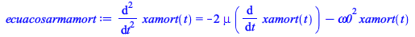 | (1.2.1) |
y su solución será
| > | solxamortt:=dsolve({ecuacosarmamort,xamort(0)=x0,D(xamort)(0)=v0},xamort(t));
assign(solxamortt);vamort(t):=(diff(xamort(t),t)); |
| 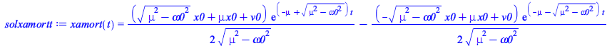 | |
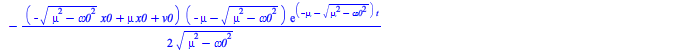 |
(1.2.2) |
con lo cual tendremos tres soluciones dependiendo del valor (mayor, igual o menor que cero) de la cantidad subradical 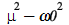 con lo cual tendremos los casos:
Estudiaremos los tres casos haciendo 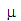 = 0,5, 3,5, y 2 respectivamente.
| > | mu:='mu':
Xamort:=unapply(xamort(t),mu,omega0,x0,v0,t): Vamort:=unapply(vamort(t),mu,omega0,x0,v0,t): |
Para el caso subamortiguado ( < 0; ) tendremos la evolución del sistema, dada por
| > | plot([Xamort(0.5,2,0,3,t),Xamort(0.5,2,0,5,t),Xamort(0.5,2,0,2*sqrt(10),t),Xamort(0.5,2,0,7,t),Xamort(0.5,2,0,8,t)],
t=0..4*Pi,labels=[t,"xamort"], title="Oscilador Armonico Amortiguado, Evolucion temporal",scaling=constrained, view=[0..7,-1.5..3] ); |
| 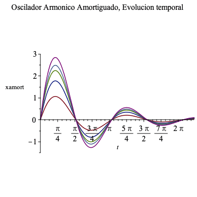 |
y la representación en el espacio de fases será
| > | plot({[Xamort(0.5,2,0,3,t),Vamort(0.5,2,0,3,t),t=0..2*Pi],[Xamort(0.5,2,0,5,t),Vamort(0.5,2,0,5,t),t=0..2*Pi],[Xamort(0.5,2,0,2*sqrt(10),t),Vamort(0.5,2,0,2*sqrt(10),t),t=0..2*Pi],[Xamort(0.5,2,0,7,t),Vamort(0.5,2,0,7,t),t=0..2*Pi],[Xamort(0.5,2,0,8,t),Vamort(0.5,2,0,8,t),t=0..2*Pi] }, scaling=constrained,labels=[xamort,vamort],title="Oscilador Armonico Subamortiguado, Diagrama de Fase "); |
| 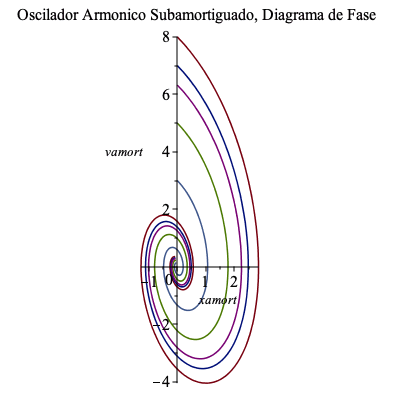 |
Para el caso sobreamortiguado (si  > 0 ) la evolución temporal del oscilador será
> 0 ) la evolución temporal del oscilador será
| > | plot([Xamort(2.1,2,0,3,t),Xamort(2.1,2,0,5,t),Xamort(2.1,2,0,2*sqrt(10),t),Xamort(2.1,2,0,7,t),Xamort(2.1,2,0,8,t)],
t=0..4*Pi,labels=[t,"xamort"], title="Oscilador Armonico Sobreamortiguado, Evolucion temporal",scaling=constrained, view=[0..5,0..1.5] ); |
| 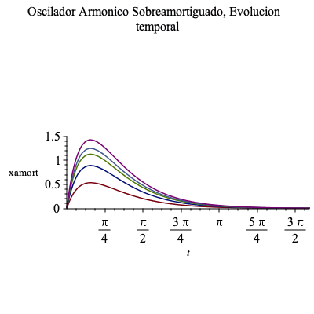 |
mientras que el diagrama de fase será
| > | plot({[Xamort(2.1,2,0,3,t),Vamort(2.1,2,0,3,t),t=0..2*Pi],[Xamort(2.1,2,0,5,t),Vamort(2.1,2,0,5,t),t=0..2*Pi],[Xamort(2.1,2,0,2*sqrt(10),t),Vamort(2.1,2,0,2*sqrt(10),t),t=0..2*Pi],[Xamort(2.1,2,0,7,t),Vamort(2.1,2,0,7,t),t=0..2*Pi],[Xamort(2.1,2,0,8,t),Vamort(2.1,2,0,8,t),t=0..2*Pi] }, scaling=constrained,labels=[xamort,vamort],title="Oscilador Armonico Sobreamortiguado, Diagrama de Fase "); |
| 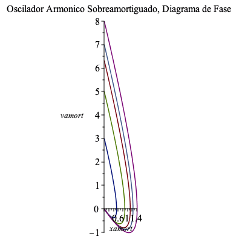 |